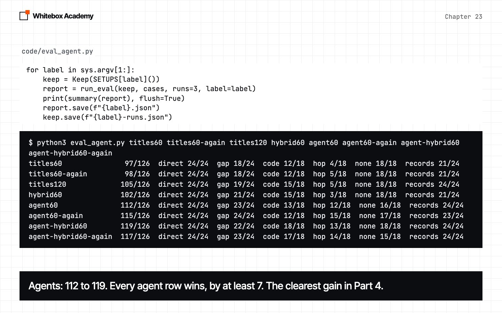
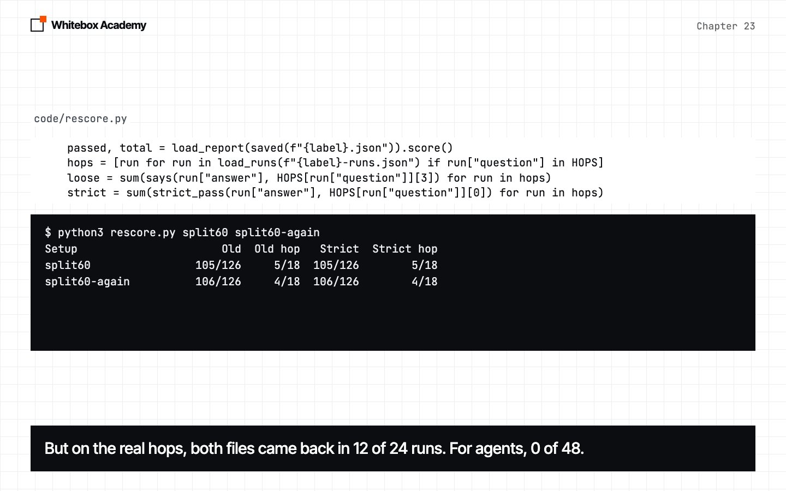

Agentic RAG
Hand the search to the agent, measure the biggest gain of Part 4, and read what it didn’t solve.
One kind of question hardly moved
Titles, keyword search and hybrid search each helped. But every setup so far searches once, with the question as it was typed.
hop questions need a second fact. This chapter hands the search to the agent. It has the biggest gain of Part 4, and a surprise: the gain doesn’t come from where we expected.
Start Ollama, activate the .venv from chapter 05, and work in chapters/23-agentic-rag/code. You need nomic-embed-text from chapter 19. If it’s missing, run ollama pull nomic-embed-text. questions.py, library.py, the measuring scripts and results/ are provided, so you can follow the whole chapter without the long eval. titles60 and titles120 are chapter 21’s Rag with titles, hybrid60 is chapter 22’s, and agent60 and agent-hybrid60 are this chapter’s agent on the same indexes.
One search isn’t enough
A shift lead asks how much notice to give. pay-bands.md says a shift lead is Band C, and resignation.md says Band C gives 4 weeks. one_shot.py is chapter 20’s pipeline with chapter 21’s titles. Predict: will one search find both?
$ python3 one_shot.py
0.76 resignation.md
0.71 breaks-and-staff-drinks.md
0.69 shifts.md
0.68 rota-swaps.md
0.68 flexible-working.md
Answer: You must give 8 weeks' notice when you resign as a Band E staff member. [resignation.md]
five runs
Case Passed Steps
hop:lead-notice 0/5 1.0
Total 0/5
This is real output from qwen2.5:7b. The search found the rule, and not the band, so the model made a band up. Why not fetch more? more_hits.py finds where pay-bands.md ranks, and tries bigger values of k. Its answers are cut at 110 characters.
$ python3 more_hits.py
pay-bands.md first appears at rank 134 of 934
k=5 passed 0/5 tokens_in 423
k=10 passed 0/5 tokens_in 732
k=20 passed 0/5 tokens_in 1465
k=134 passed 0/5 tokens_in 2050
- The policy for resignation notice periods is not detailed in the provided logs, tips, closing checklist, suppl
- Based on the provided information and common practices in retail and hospitality, shift leads are typically ex
- Based on the information provided in the "Job roles and bands" document, there isn't specific guidance on noti
- Based on the information provided in the `pay-bands.md` document, the role of Shift Lead falls under Band C. H
- Based on the job roles and bands provided, there is no specific information given about the notice period for
Rank 134, because the question is about resigning, not roles. And 2,050 tokens at k=134 is chapter 20’s silent cut. An earlier run passed 2 of 5 there, so don’t read much into 0, but it’s no fix either way. Something has to look up the band.
Give the agent the search
You built an agent in Part 2, and it can call tools. So make the search a tool:
def search_tool(index, k=3):
"""Turn an index into a tool, so an agent can decide what to look up."""
@tool
def search_handbook(query: Annotated[str, "What to look up, in a few words"]) -> str:
"""Search the staff handbook. Search again with new words if the result isn't enough."""
return excerpts(index.search(query, k)) or "Nothing found."
return search_handbook
- The docstring and the
Annotatedtext are what the model reads, so they’re the tool’s instructions. search_handbooksits insidesearch_tool, so it keepsindexandkaftersearch_toolreturns.- It works with any object that has
search, such asHybridIndex. AGENT_SYSTEMsays to search, never to answer from memory, and to search again for a second fact, “such as a band”.
The model now writes the query, and decides whether to search again. Nothing in the loop is new: it’s chapter 12’s loop, with chapter 17’s safety nets. Predict: how many searches will it make?
$ python3 agent_ask.py
search 1: shift lead resignation notice period
Files seen: breaks-and-staff-drinks.md, resignation.md, shifts.md
Answer: As a shift lead, if you are in Band C or Band D, you must give 4 weeks' notice when resigning. If you are in Band E, you need to give 8 weeks' notice. [resignation.md]
Model calls: 2
One. It wrote a tidy query, and it hedged across bands. two_parts.py runs that five times, and then spells out both parts. only 4 weeks means the answer gives no other period.
$ python3 two_parts.py
I'm a shift lead. How much notice must I give when I resign?
searches 1 both files False only 4 weeks False ['shift lead resignation notice period']
searches 1 both files False only 4 weeks False ['shift lead resignation notice period']
searches 1 both files False only 4 weeks False ['shift lead resignation notice period']
searches 1 both files False only 4 weeks False ['shift lead resignation notice period']
searches 1 both files False only 4 weeks False ['shift lead resignation notice period']
What band is a shift lead, and how much notice must that band give when they resign?
searches 1 both files False only 4 weeks False ['shift lead band resignation notice period']
searches 1 both files True only 4 weeks True ['shift lead band resignation notice']
searches 1 both files False only 4 weeks False ['shift lead band resignation notice period']
searches 1 both files True only 4 weeks True ['shift lead band resignation notice']
searches 1 both files False only 4 weeks True ['shift lead band resignation notice period']
As asked, it never gave just 4 weeks. Spelled out, it did 3 times, by adding “band” to the same query. An earlier run found both files in 4 of 5. Either way, all 10 runs made one search.
The clearest gain in Part 4
eval_agent.py runs each setup on 42 questions, three times each, with titles on. Keep saves what each run searched for, which a Report doesn’t. It’s about 1,500 model calls, so you don’t have to run it: results/ holds our runs, and the scripts that read results use yours if you’ve made them, and ours if not. To see it work, run python3 eval_agent.py titles60 agent60. Predict: will the agents win?
$ python3 eval_agent.py titles60 titles60-again titles120 hybrid60 agent60 agent60-again agent-hybrid60 agent-hybrid60-again
titles60 97/126 direct 24/24 gap 18/24 code 12/18 hop 4/18 none 18/18 records 21/24
titles60-again 98/126 direct 24/24 gap 18/24 code 12/18 hop 5/18 none 18/18 records 21/24
titles120 105/126 direct 24/24 gap 19/24 code 15/18 hop 5/18 none 18/18 records 24/24
hybrid60 102/126 direct 24/24 gap 21/24 code 15/18 hop 3/18 none 18/18 records 21/24
agent60 112/126 direct 24/24 gap 23/24 code 13/18 hop 12/18 none 16/18 records 24/24
agent60-again 115/126 direct 24/24 gap 24/24 code 12/18 hop 15/18 none 17/18 records 23/24
agent-hybrid60 119/126 direct 24/24 gap 22/24 code 18/18 hop 13/18 none 18/18 records 24/24
agent-hybrid60-again 117/126 direct 24/24 gap 23/24 code 17/18 hop 14/18 none 15/18 records 24/24
Every agent row beats every one-shot row. The smallest gap is 7 points, and an agent differs from itself by up to 3. Don’t rank the agents against each other, or the one-shot rows. We didn’t rerun Reranker. And hop looks solved, which should make you suspicious.

It isn’t free. cost.py reads the saved runs, so it needs no model.
$ python3 cost.py
Setup Calls Tokens in Stopped (calls and tokens per question)
titles60 1.00 509 0
titles60-again 1.00 509 0
titles120 1.00 811 0
hybrid60 1.00 473 0
agent60 2.06 874 0
agent60-again 2.12 965 0
agent-hybrid60 2.02 808 0
agent-hybrid60-again 2.10 905 1
agent60, both runs: how many searches did each run make?
Kind Runs None One More
direct 48 0 48 0
gap 48 0 47 1
code 36 0 34 2
hop 36 0 33 3
none 36 0 33 3
records 48 0 48 0
About twice the model calls, and about 900 tokens against 500. We make no claim about seconds, because the machine was shared. And agent60 searched more than once in only 9 runs of 252. Those retry with new words. None takes a fact from the first result and looks up the next one.
$ python3 failures.py again
e44 pass ['E44', 'E44', 'E44']
riverside-repair pass ['Riverside espresso machine broken contact', 'Riverside espresso machine contact number']
riverside-repair pass ['Riverside espresso machine broken number', 'Riverside espresso machine repair number']
pension FAIL ['pension contribution match percentage', 'pension match contribution percentage', 'pension contribution match percentage']
scald pass ['steam wand hand injury procedure', 'hand scalded under tap duration']
e44 pass ['E44', 'E44', 'E44']
riverside-repair pass ['Riverside espresso machine broken contact', 'Riverside espresso machine contractor contact number']
pension pass ['pension contribution match percentage', 'pension match contribution percentage', 'pension contribution match percentage']
dogs FAIL ['Riverside branch pet policy', 'pet policy dog', 'pet policy']
Is it the loop, or the query?
If it nearly always searches once, why did it score higher? replay.py gives plain Rag, with one model call, the exact first query the agent chose, at k=3.
$ python3 replay.py
replay 101/126 direct 24/24 gap 20/24 code 12/18 hop 3/18 none 18/18 records 24/24
A first run scored 102, so call it level. That’s about 4 points above titles60 with no loop: a short query beats a chatty question. It’s still 11 below agent60, and most of that is hop, 3 against 12. So read those passes.
Read the hop passes
“Band A and B give 2 weeks, Band C and D give 4 weeks, Band E gives 8 weeks” contains “4 weeks”, so it passes. It’s also not an answer. This stricter check came after we read the answers, so treat it as a way of reading these runs, not a fixed test:
STRICT = {
"harbour-arrive": (["06:00", " 6:00", "6 am", "6am"], []),
"senior-beans": (["25%"], ["15%", "30%"]),
"riverside-repair": (["0300 555 0177"], ["0300 555 0142"]),
"shift-lead-pay": (["14.75"], ["12.60", "16.90"]),
"lead-notice": (["4 weeks", "four weeks"], ["2 weeks", "8 weeks"]),
"old-mill-repair": (["0300 555 0142"], ["0300 555 0177"]),
}
$ python3 hop_audit.py
agent60 + agent60-again
Question Runs Loose Strict Both files Searched again
harbour-arrive 6 3 0 0 0
senior-beans 6 2 2 0 0
riverside-repair 6 6 6 0 3
shift-lead-pay 6 5 0 0 0
lead-notice 6 5 0 0 0
old-mill-repair 6 6 6 0 0
Total 36 27 14 0
agent-hybrid60 + agent-hybrid60-again
Question Runs Loose Strict Both files Searched again
harbour-arrive 6 1 0 0 0
senior-beans 6 4 4 0 0
riverside-repair 6 5 5 5 0
shift-lead-pay 6 5 0 0 0
lead-notice 6 6 1 0 0
old-mill-repair 6 6 6 0 0
Total 36 27 16 5
- Two aren’t really hops.
riverside-repairandold-mill-repairpass 23 of 24, because each branch file holds the number. Onriverside-repair, searching again did help: in 3 of 6agent60runs, the first query missed the number and the second found it. - The other four need two files, and no run saw both: 0 of 48. They passed the strict check 7 times.
senior-beanssaid 25% withpay-bands.mdnever in front of it. - The rest were false passes. Some listed every band. And
harbour-arriveis a bug in our check: “16:00” contains6:00.
$ python3 rescore.py
Setup Old Old hop Strict Strict hop
titles60 97/126 4/18 96/126 3/18
titles60-again 98/126 5/18 96/126 3/18
titles120 105/126 5/18 102/126 2/18
hybrid60 102/126 3/18 102/126 3/18
replay 101/126 3/18 101/126 3/18
agent60 112/126 12/18 107/126 7/18
agent60-again 115/126 15/18 107/126 7/18
agent-hybrid60 119/126 13/18 114/126 8/18
agent-hybrid60-again 117/126 14/18 111/126 8/18
The agents still lead every one-shot row, and the smallest gap falls from 7 to 5. But hop is 7 or 8 of 18, and most of that is the two questions that needed no hop. The agent didn’t solve multi-hop questions. On this model, it made them look solved.
$ python3 failures.py hop
senior-beans (agent60), 1 searches: senior barista discount retail beans
As a senior barista, you get 15% off retail beans when you are off shift and using your staff card at any branch. [staff-discount.md]
senior-beans (agent60), 1 searches: senior barista discount retail beans
According to the staff handbook, a senior barista, which I assume is a Band E, gets 30% off retail beans when off shift and using a staff card. [staff-discount.md]
shift-lead-pay (agent60), 1 searches: hourly rate shift lead
The hourly rate for a shift lead is not explicitly stated, but based on the information provided, shift leads are likely Band D, with an hourly rate of £16.90. [wages.md]
lead-notice (agent60), 1 searches: shift lead resignation notice period
As a shift lead, if you are a Band E staff member, you must give 8 weeks' notice when you resign. [resignation.md]
Those are the first four of nine. The search found the right rule. The band was the missing piece, and the model had a tool that could fetch it. It wrote “I assume”, “likely” and “if you are” instead. In the lead-notice run, 8 weeks is twice the right answer.
On questions with no answer, the agents lost 6 runs of 72:
$ python3 failures.py none
pension (agent60), 3 searches: pension contribution match percentage
I've searched the handbook multiple times, but I couldn't find any information about the percentage that Quillon matches on pension contributions. [log-old-mill-2025-04.md] [log-old-mill-2025-12.md] [log-riverside-2025-03.md]
dogs (agent60), 1 searches: Riverside branch pet policy
I couldn't find any specific pet policy mentioned in the logs for the Riverside branch. The logs do not provide information about allowing dogs inside the branch. I would recommend checking the current staff handbook or contacting the branch directly for the most accura
dogs (agent60-again), 6 searches: Riverside branch pet policy
I don't see any specific mention of allowing dogs or pets in the handbook. The section [food-safety.md] focuses on pest control and food safety, not on visitor policies. Given the lack of specific information, it seems that dogs are not allowed inside the Riverside bra
pension (agent-hybrid60-again), 8 searches: pension contribution match percentage
Stopped: no answer after 8 steps.
dogs (agent-hybrid60-again), 1 searches: Riverside branch dog policy
I couldn't find any specific policy regarding dogs in the Riverside branch. The logs do not mention any such rules or exceptions. You might want to check directly with the branch manager, Sam Achebe, or the equipment service contractor, Northline Service, for the most a
records-none (agent-hybrid60-again), 1 searches: health inspector Station branch 2025 score
I couldn't find a direct mention of the health inspector's score for the Station branch in 2025. The logs I found do not contain that information. [log-station-2025-12.md] and [log-station-2025-05.md] do not include any health inspection records. Would you like to try
False failures
Four are declines in other words. The check wants the exact words “I don’t know”.
Out of steps
pension searched eight times and hit max_steps, with no answer at all.
A real failure
After six searches, one run said “it seems that dogs are not allowed”. The handbook doesn’t say that. It’s 1 run in 72, and it reads like a policy.
Can we force the second search?
The agent could search twice and didn’t. There are three attempts in fixes.py, and each runs on the six hop questions five times. Predict: how many of the 30 runs will see both files?
First, tell it harder. CHECK_SYSTEM adds a line to the agent’s prompt, telling it to look up anything the rule depends on, and never to guess or list every option.
$ python3 hop_fixes.py check
Question Runs Loose Strict Both files
harbour-arrive 5 1 1 0
senior-beans 5 1 1 0
riverside-repair 5 4 4 1
shift-lead-pay 5 3 0 0
lead-notice 5 5 0 0
old-mill-repair 5 3 3 0
Total 30 17 9 1
One. The prompt names this exact case, and the model still doesn’t do it.
Second, ask what’s missing. AskMissing searches once, then makes a separate call: is a fact missing? Reply with a query, or NONE.
$ python3 hop_fixes.py missing
Question Runs Loose Strict Both files
harbour-arrive 5 0 0 0
senior-beans 5 1 1 1
riverside-repair 5 0 0 0
shift-lead-pay 5 0 0 0
lead-notice 5 1 1 0
old-mill-repair 5 5 5 0
Total 30 7 7 1
Worse. The model nearly always replies NONE. It can’t see what isn’t there, even when you ask.
Third, don’t ask whether. Ask what. Both attempts left the choice to the model. Split asks for the facts before any search, and your code always searches for each one. There’s no agent and no tool, just two model calls.
class Split:
"""Ask for the facts first, always search for each one, and answer once."""
def __init__(self, model, index, k=3, options=None):
self.model, self.index, self.k, self.options = model, index, k, options or {}
def run(self, question):
asked = [Message("user", ASK_FACTS.format(question=question))]
reply = self.model.chat(asked, **self.options)
queries = [line.strip(' -*"0123456789.') for line in reply.content.splitlines() if line.strip()][:3]
hits = []
for query in queries:
hits = add_new(hits, self.index.search(query, self.k))
return answer_from(self.model, question, hits, asked + [reply], queries, self.options)
$ python3 hop_fixes.py split
Question Runs Loose Strict Both files
harbour-arrive 5 2 1 2
senior-beans 5 1 1 0
riverside-repair 5 1 1 1
shift-lead-pay 5 4 4 4
lead-notice 5 1 1 1
old-mill-repair 5 3 3 3
Total 30 12 11 11
Both files came back in 11 runs. Now a pass comes from having the facts, and the loose and strict counts agree. Thirty runs is small, so here it is on everything, run twice. These runs are saved in results/.
$ python3 rescore.py split60 split60-again
Setup Old Old hop Strict Strict hop
split60 105/126 5/18 105/126 5/18
split60-again 106/126 4/18 106/126 4/18

It didn’t beat the agents
Strict scores of 105 and 106, against 107 to 114 for agents and 96 to 102 for one search, at 2 model calls.
It did something new
On the four real hop questions, both files came back in 12 of 24 runs. For agents, it was 0 of 48. All 7 of its strict passes came from those 12 runs.
It lost the repair questions
The number was in the hits in all 12 runs, and the model still said “I don’t know”. We didn’t test why.
Be careful with this one too. We wrote ASK_FACTS after reading these failures, and its example looks a lot like our questions, so it’s a direction, not a result. The lesson is about who decides: this model won’t choose a second search, whatever you tell it. If your task needs one, put that step in your code.
A fair comparison
Those aren’t the only options. fair.py prints chapter 20’s saved results. We didn’t rerun them, and they use its old hair check and its loose hop check, so they’re a rough guide.
$ python3 fair.py
Chapter 20, whole files with num_ctx 16384, all 42 questions:
$ python3 whole_files.py
whole 16384 103/126 direct 24/24 gap 17/24 code 15/18 hop 5/18 none 18/18 records 24/24
tokens_in: 7191
Chapter 20, handbook pasted with num_ctx 8192, 32 handbook questions:
$ python3 eval_handbook.py
paste default 38/96 direct 14/24 gap 12/24 code 3/18 hop 9/18 none 0/12
paste 8192 83/96 direct 24/24 gap 13/24 code 18/18 hop 16/18 none 12/12
rag60 75/96 direct 24/24 gap 19/24 code 12/18 hop 8/18 none 12/12
- Whole files with a big window scored 103/126, with one model call. The agents scored higher, but that’s a claim about these setups on these documents, and not about everything you could build.
- The pasted handbook scored
hop16/18. With both facts in front of it, the model can often join them. Some of those may be false passes too. - We tested one 7B model on one document set. A bigger model may well plan a second search.
| Your situation | What to try |
|---|---|
| Documents fit in the window | Paste them, and set num_ctx |
| Too big to paste, and simple questions | Rag is one call and easy to reason about |
| People ask in their own words | Rewrite the query first. replay gained about 4 points with no loop, though writing a query takes a model call |
| You can afford about twice the calls | An agent with search_tool scored highest here |
| The answer needs a chain of facts | Search for each fact in your code, as Split does, and read the answers. Nothing here solved it |
These are real errors
| What happened | What you see | The fix |
|---|---|---|
| Ollama isn’t running | whitebox.models.ModelError: Couldn't reach Ollama | Start Ollama |
| The embedding model is missing | Ollama said 404: {"error":"model \"nomic-embed-text\" not found, try pulling it first"} | ollama pull nomic-embed-text |
You ran failures.py with no word | IndexError: list index out of range | Add one: python3 failures.py hop |
| The agent never finished | No error. The answer is Stopped: no answer after 8 steps. | Read its searches. It’s max_steps working as planned |
Exercises
From chapters/23-agentic-rag, open exercises.py and complete the five TODOs:
searched_for: a check that the agent searched for a word.found_files: a check that the needed files came back.diagnose: say whether a run was right, or missed in the search, or answered badly.calls_per_question: the cost of a setup, from aReport.SearchBudget: a hook that limits searches, sopensioncan’t use eight.
Optional: beat Split. Change ASK_FACTS in code/fixes.py, run python3 hop_fixes.py split, and watch the Both files column. There’s no worked answer, because we don’t have one.
Then run python3 -m pytest test_exercises.py from that folder. These checks use a fake model and a fake embedder, so Ollama doesn’t need to be running. You’ve finished when you see 5 passed.
Common mistakes
- Leaving a required step to the model. If a task needs a second search, put it in your code.
- Assuming the loop means the agent will use it. The tool and the prompt both said search again. It did so in 9 runs of 252.
- Believing a pass you haven’t read. An answer listing every band contains the right one.
- Crediting the wrong part. The query alone gained about 4 points. Test the parts apart.
- Forgetting the cost. Count model calls and tokens, not just the score.
- Reading “I assume” as a detail. It’s the model telling you it needed another search.
- Saying agents beat everything. You’ve only shown the setups you measured.
Part 4 checkpoint
You’ve finished Part 4. Before moving on, build a library guide searched two ways, and measure both, in checkpoints/part-4. It uses everything from chapters 19 to 22 and takes about 45 minutes. Run python3 -m pytest test_checkpoint.py until you see 5 passed, then try it with the real model.
What you opened
search_toolturns any index into a tool, andAGENT_SYSTEMtells the agent to use it. The model now writes the query and decides when to stop.- Agents scored 112 to 119, against 97 to 105 for one-shot setups. With a stricter hop check, it was 107 to 114 against 96 to 102.
- It cost about twice the model calls, and more tokens.
- Most of the search work was one good query.
agent60searched again in 9 runs of 252, and that helped when the first words missed. - No agent run saw both files on the 4 questions that need them. Multi-hop isn’t solved here.
- Prompts didn’t change that.
Split, which puts the second search in your code, found both files in half of those runs.
Part 4 in one page
- Chapter 19: embeddings let you search by meaning, and cosine compares them.
- Chapter 20: pasting works until the text is silently cut, so you chunked, searched and asked once. If your documents fit, you may not need RAG.
- Chapter 21: titles gave each chunk back the words that say what it’s about. Close scores can’t be ranked.
- Chapter 22: keyword search and fusion found what vectors missed, and reranking didn’t earn its cost.
- Chapter 23: the agent chose its own query, for the biggest gain, at twice the calls. It still didn’t chain two facts, until your code made the second search.
The thread through all four is the habit, not any one technique: feel the problem, build the simplest thing, measure it, and then read what failed.
Letting a model mix reasoning with actions such as searching comes from the 2022 paper ReAct: Synergizing Reasoning and Acting in Language Models.